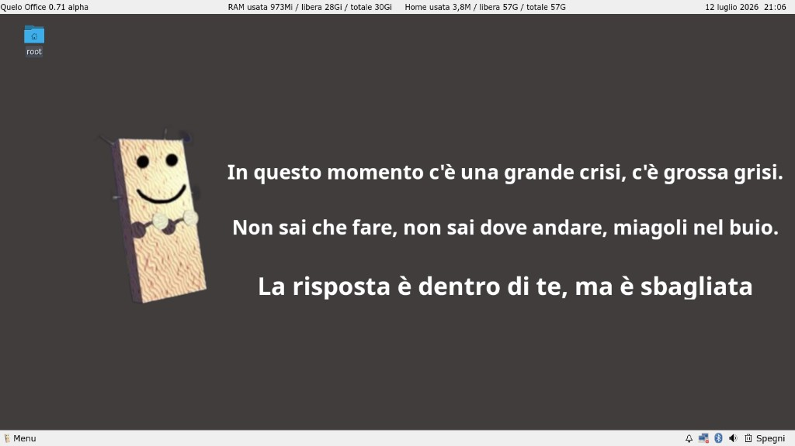
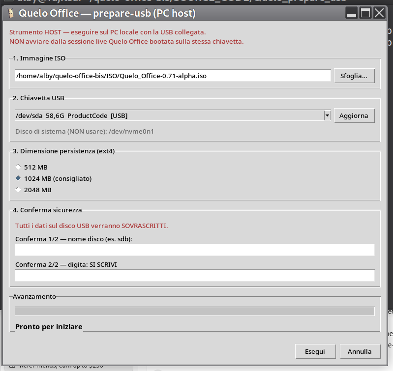
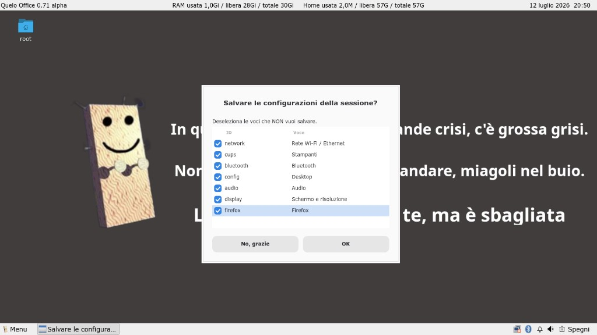
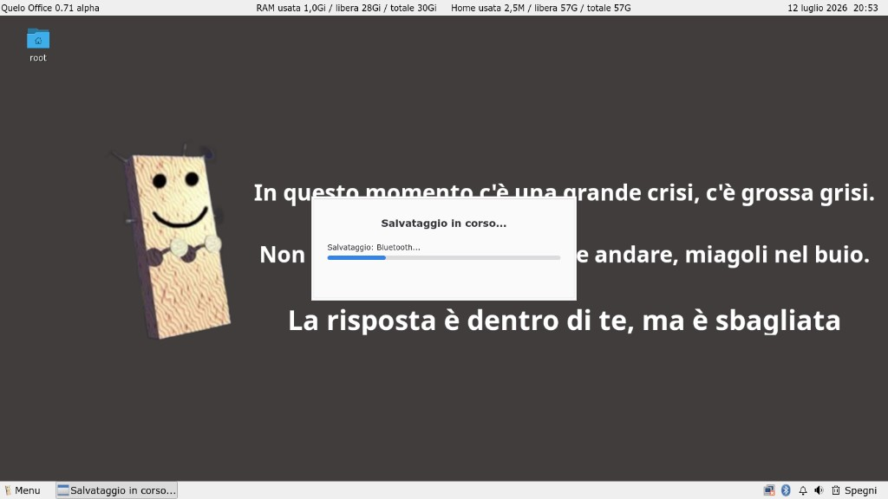
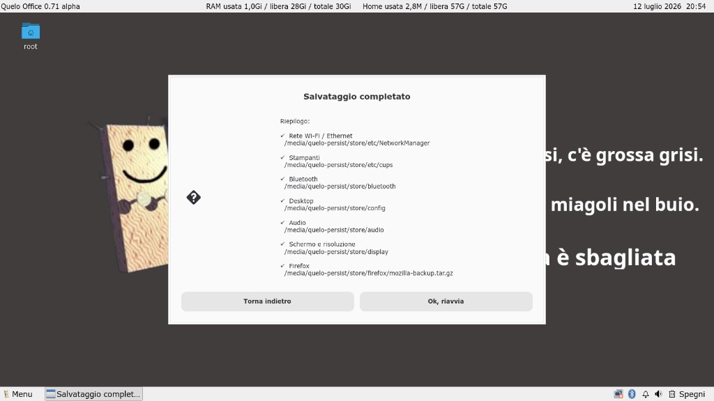
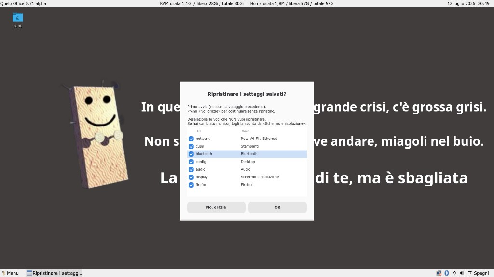
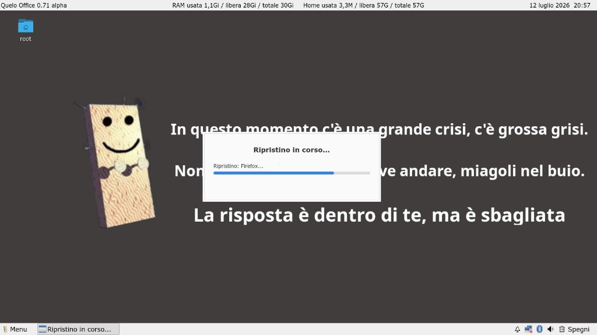
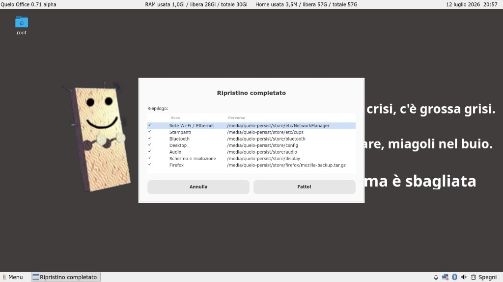

Tired of live systems that lose all your customizations every time you reboot?
Do persistent live distros stress you because they’re painfully slow and complicated to set up?
Then Quelo Office is for you: fast, simple, and lets you keep your settings
and files with ease.
Made for you — if you Meow in the Dark!
Quelo Office
A small portable office on a USB stick — in Italian, ready to use on almost any PC. Inspired by Corrado Guzzanti’s «Quelo» character.
prepare-usb package (USB stick preparation)
Full package: prepare-usb.sh (CLI) + prepare-usb-gui (Linux graphical interface),
quelo-write-iso.py, and notes. Download the ISO from the same Release page.
Full (CLI + GUI)
Linux GUI only
Windows GUI (32-bit and 64-bit, offline)
On Windows: extract the archive and double-click AVVIA.bat (accept the UAC administrator prompt).

What it is for
- Carry a full office setup (documents, browser, printing, scanning).
- Work on multiple PCs with the same USB stick, without touching internal disks.
- Keep personal files readable on Windows and macOS (exFAT home).
- Save only the settings that matter, without opaque automatic overlays.
Main features
System and desktop
- Based on Debian sid (live-build), Italian locale, Europe/Rome timezone.
- Boots straight to desktop: autologin, startx, LXQt session with Openbox.
- Two LXQt panels: version/RAM/home/clock on top; menu, taskbar, network, Bluetooth, volume, trash, power on bottom.
- Custom menu with Quelo logo; adjustable fonts for menu and bottom panel.
Included applications
| Area | Software |
|---|---|
| Office | LibreOffice (Italian UI + spell checker) |
| Web | Firefox ESR (Italian) |
| Text / PDF | Mousepad, Zathura |
| Files | pcmanfm-qt |
| Images | lximage-qt, mtPaint |
| Multimedia | SMPlayer, Audacious |
| Utilities | KCalc, lxterminal, Xarchiver, SMB4K, screenshot |
| Print / scan | CUPS, Simple Scan, broad drivers |
| Network | NetworkManager, Wi‑Fi/LAN firmware, mobile broadband |
| Bluetooth | Blueman |
Live behaviour
- Every boot starts from a clean ISO — no automatic Debian overlay on
/usr. - Caches and temp data in RAM — lean sessions.
- Selective save on reboot/shutdown and guided restore at startup.
- Documents on the QUELO-HOME exFAT partition, readable everywhere.
Screenshots
USB stick preparation (host GUI)
Linux graphical tool to write the ISO and create persistence and home partitions — host PC only.

Session save and restore
Choose what to keep (network, printers, Bluetooth, desktop, audio, display, Firefox) and review the summary before rebooting.






USB stick layout
┌─────────────────────────────────────────────────────────┐ │ Partition 1–2 │ Live ISO (read-only at boot) │ ├──────────────────┼──────────────────────────────────────┤ │ Partition 3 │ ext4 «persistence» — Linux settings │ │ │ (invisible to Windows/macOS) │ ├──────────────────┼──────────────────────────────────────┤ │ Partition 4 │ exFAT «QUELO-HOME» — your files │ │ │ (readable everywhere) │ └──────────────────┴──────────────────────────────────────┘
How to use it
- Download the ISO and a prepare-usb package (full or GUI-only) from the 0.71-alpha Release page.
- Prepare the USB stick on a host PC — never from the live session booted on the same stick.
Linux graphical interface (recommended on Linux)
cd Quelo_prepare_usb_gui
./prepare-usb-gui.shHost prerequisites: python3, python3-tk, e2fsprogs, exfatprogs, util-linux, polkit (pkexec) or sudo.
Debian/Ubuntu: sudo apt install python3 python3-tk e2fsprogs exfatprogs util-linux polkit-1
Terminal script (Linux CLI)
cd Quelo_prepare_usb
sudo ./prepare-usb.shHost prerequisites: e2fsprogs, exfatprogs, util-linux.
Windows graphical interface (32-bit and 64-bit)
- Download
Quelo-prepare_usb_windows.zip(or RAR/TAR) from the Release. - Extract the archive.
- Double-click
AVVIA.bat(accept the UAC administrator prompt). - In the GUI: choose ISO, USB drive, persistence size; type
SI SCRIVI.
Offline package (includes 32-bit Python). Requirements: Windows 7 SP1 or later, administrator privileges.
- Boot from USB (BIOS/UEFI).
- On shutdown, use the Power button to save the settings you want to keep.
Why a separate USB preparation script?
USB preparation (prepare-usb.sh) must run on the host PC, not inside the live system booted from the same stick:
- Safety —
ddand partitioning are destructive; the host script has checks and double confirmation. - Reliability — partitioning the disk you boot from is technically fragile.
- One ISO for everyone — same image for all; each user customizes their own stick afterwards.
- Tool choice — write the ISO with Etcher and use the script only for persistence and QUELO-HOME.
Disclaimer
Disclaimer. Quelo Office is provided «as is», without warranty of any kind, express or implied. It is intended for educational and experimental purposes only: it does not replace professional support and does not guarantee correct operation on every hardware configuration or the outcome of any disk, system, or network operation. Use at your own risk; the author is not liable for any direct or indirect damage arising from the use of the ISO, scripts, or published instructions.
Avvertenza. Quelo Office è distribuito «così com'è», senza garanzie di alcun tipo, espresse o implicite. È realizzato a scopo didattico e sperimentale: non sostituisce l'assistenza professionale né garantisce il corretto funzionamento su ogni hardware o l'esito delle operazioni su dischi, sistemi o reti. L'uso è a proprio rischio; l'autore non risponde di danni diretti o indiretti derivanti dall'uso dell'ISO, degli script o delle istruzioni pubblicate.
License
Original Quelo Office work: Creative Commons BY-NC 4.0. Non-commercial and educational use allowed with attribution. Commercial use requires written permission from Alberto Frosio.